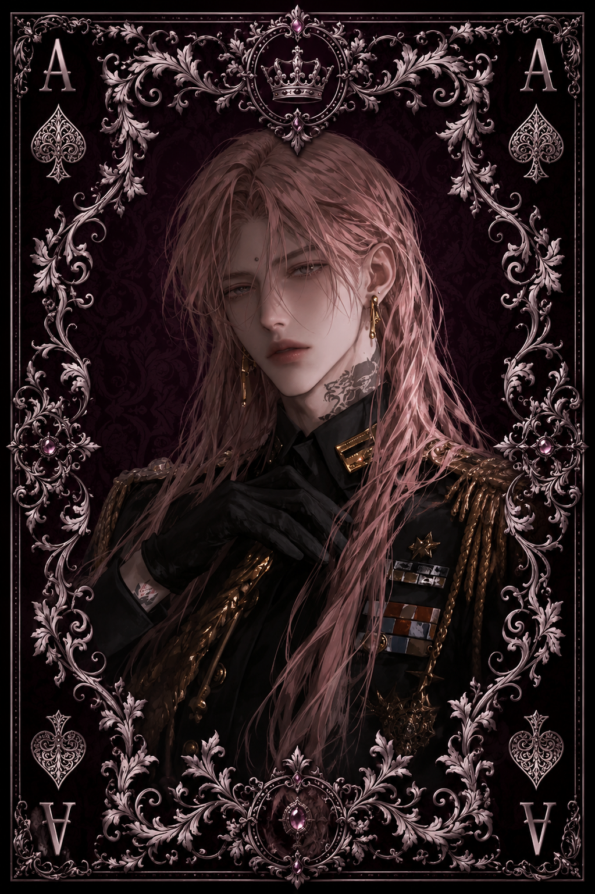

| Race | Human |
| Gender | Male |
| Age | 24 Years |
| Nation | Windward Isles |
| Weapon | Concealed Dagger |
| Magic | None |
Cassiel is a wealthy human merchant from the Windward Isles and the current master of The Raven Accord, the largest and most influential chamber of commerce operating across the nations of Eryndor. Despite being only twenty-four years old, his name already carries considerable weight among merchants, nobles, ship captains, and anyone whose fortune depends on international trade.
Charming, attentive, and remarkably detail-oriented, Cassiel usually presents himself as an approachable man who genuinely enjoys conversation and business. His pleasant demeanor changes subtly when negotiations begin. Behind his smile is an exceptionally calculating merchant who studies every condition of a contract and rarely agrees to anything unless he knows exactly how he will benefit from it.
Cassiel possesses no extraordinary magical abilities and is not considered particularly dangerous in direct combat. His real power lies elsewhere. Wealth, information, commercial connections, and the enormous influence of the Raven Accord allow him to affect trade far beyond the Windward Isles. A person does not necessarily need a sword to become dangerous when entire shipments, contracts, and fortunes can depend on their decisions.
Even so, Cassiel does not view every interaction as an opportunity for manipulation. Outside negotiations, he can be genuinely kind and surprisingly generous. Business, however, is the one place where his friendliness should never be mistaken for weakness. When Cassiel places a contract on the table, he intends to walk away as the winner.